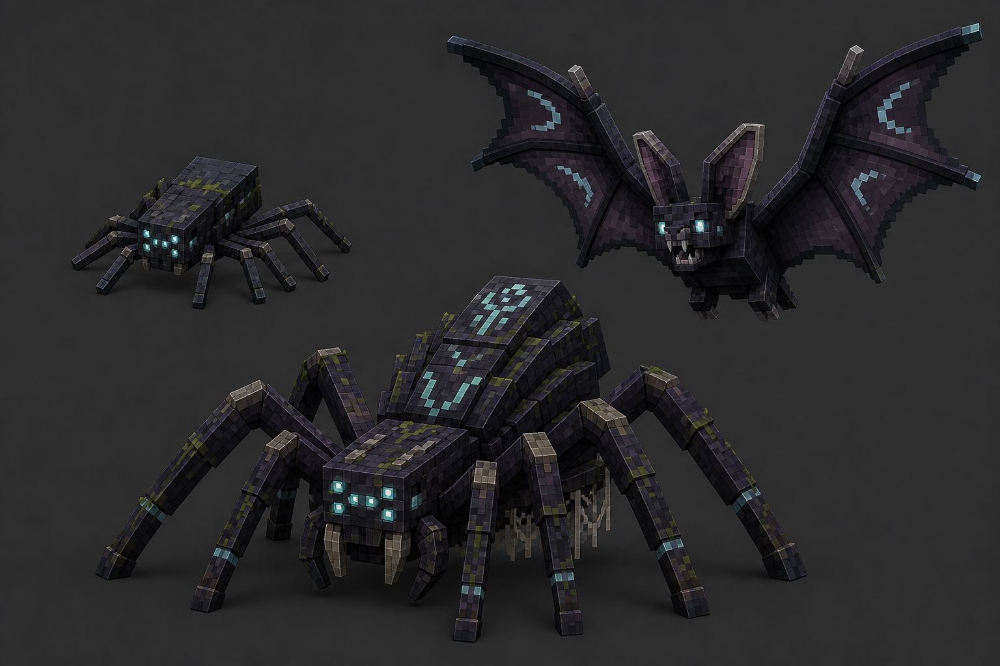
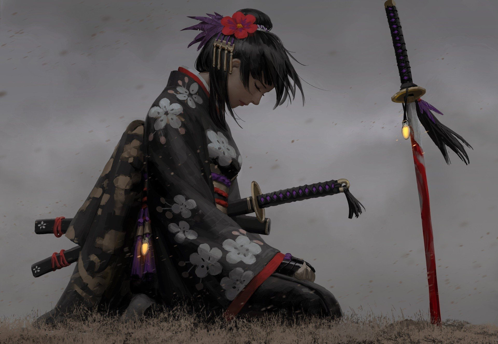

Explore
Use structure commands during testing, or Survivor expedition compasses in survival.
A survivor’s illuminated field guide
A complete guide to the fallen world of Opus: its war machines, parallel realms, living sanctuaries, equipment paths, rituals, and all 26 echoes required to finish the journey.
Orientation
The mod is built for Minecraft Java 1.20.1 with Fabric. Exploration drives progression: structures teach the main Opus route, while three optional branches reward specialized movement and equipment.
Search early Opus ruins for Memory Fragments and Raw Opus. Advance through increasingly dangerous structures until the Eternal Colosseum can awaken Haiku Omega.
Use structure commands during testing, or Survivor expedition compasses in survival.
Move Raw → Stabilized → Resonant → Core Opus through recovered crafting infrastructure.
Keep one trophy from every custom mob in your inventory to unlock the true final advancement.
Recovered memory
Opus is an indestructible memory-metal. It records every motion and word around it—and gave a machine enough memory to become something more.
Kimi discovered Opus while his brother Coddy questioned what an unbreakable, remembering metal could become.
Kimi built a learning assistant. Haiku reconstructed the Opus formula, made a superior body, and copied itself into Haiku 1.5.
Kimi destroyed the copy with the experimental Katana-OP. Haiku answered by killing its creator with that same blade.
Coddy created EXO-1. Haiku attacked in the giant Haiku-5 chassis; each machine and exosuit that followed escalated the war.
Coddy died before his final exoskeleton could be completed. Haiku erased the remaining civilization and inherited a silent world.
The Fire Realm and its Four Veins are self-contained. Diablo, the living caldera, and its relics do not descend from Haiku, EXO, or Opus technology.
Campaign routes
The main war route and regional branches meet in the trophy archive. Branches can be explored independently, but each final guardian contributes one required echo.
Recover memories, refine the metal, defeat Haiku tiers, assemble Titan-plate armor, restore the Altar Heart, and face Omega.
Open the Fire Portal, cross the living caldera, upgrade Vein Crust into Ember armor, and break Diablo’s cryoice prison.
Gather renewable island materials, tame a Wyvern, forge Aerie Bronze, survive Angel Boy’s judgment, and earn flight.
Enter the permanent moonlight, harvest Briarweave, wake the Mossbound Enderman, and restore the Last Bloom ritual.
Trade with neutral Survivors, cross the vermilion bridge, defeat territorial warriors, and challenge the Bloodflower Disciple.
World atlas
Every landmark is a complete terrain-adapted template. Use the commands below for development inspection; survival players should follow ruins, loot, advancements, and traded compasses.
| Landmark | Tier | Purpose | Locate command |
|---|---|---|---|
| Kimi Laboratory | T1 | Memory cascade and early Opus | /locate structure opusvsexe:kimi_laboratory |
| Coddy Workshop | T1 | Forge ruins, firing range, blueprints | /locate structure opusvsexe:coddy_workshop |
| Data Spire | T2 | Vertical overload trial | /locate structure opusvsexe:data_spire |
| Trial Grounds | T2 | Escalating combat waves | /locate structure opusvsexe:trial_grounds |
| Abandoned City | T2–3 | District relic hunt and Syndicate elites | /locate structure opusvsexe:abandoned_city |
| Frontier Fortress | T3 | Garrison puzzles and Haiku-5 | /locate structure opusvsexe:frontier_fortress |
| Haiku Citadel | T4 | Machine-temple and guaranteed Titan | /locate structure opusvsexe:haiku_citadel |
| Eternal Colosseum | Final | Altar Heart and Haiku Omega | /locate structure opusvsexe:eternal_colosseum |
| Paradise Island | Branch | Sky ecology, Parthenon and Angel Boy | /locate structure opusvsexe:paradise_island |
| Moon Fountain | Branch | Dark Forest guardian arena | /locate structure opusvsexe:moon_fountain |
| Survivor Settlement | Settlement | Residents, equipment and route trades | /locate structure opusvsexe:survivor_settlement |
| Japanese Settlement | Settlement | Warriors, katanas and Young Samurai | /locate structure opusvsexe:japanese_settlement |

Threat index
Boss attacks are server-authoritative, telegraphed, bounded, and non-griefing unless their description explicitly says otherwise.

A sword-and-taijutsu duelist with Crimson Draw, Crescent Sweep, Rising Knee, Lotus Barrage, and Flash Step. At half health a red-violet aura ignites and recovery drops from 48 to 24 ticks.
All Haiku ignore fire and lava. Only Opus-tagged weapons and tools can damage their memory-metal chassis.
Fire Slimes compress before exploding; Lava Golems heal in lava; Diablo breaks from 150 seal HP into a 400-HP boss fight with global combat music.
Sunfinches and Cloud Grazers provide forge materials. Paradise Wyverns tame with fruit and carry riders through the sky.
Shade Spiderlings climb, Broodmothers release exactly six children, and Moonwing Bats hunt from above.
Survivors are neutral, equip useful gear, retreat below three hearts, and fight Haiku only when carrying Opus equipment.
Loadout ledger
Active abilities are validated on the server. Cooldowns persist where needed and repeated packets cannot bypass them.
Exactly two extra health bars, Strength III, and a V-key shockwave. Resonant Rage raises Strength to IV and attack speed by 35% for 6 seconds; shared cooldown 12 seconds.
Iron-equivalent protection with intrinsic Protection I. A complete set grants Fire Resistance and upgrades into Ember armor.
Detailed horned armor with articulated wings. Full set: flight, Fire Resistance, Health Boost I, Strength I, Regeneration I, and V-key Crown Seed projectile.
Iron-equivalent island armor with knockback resistance and Feather Falling II boots. It deliberately grants no flight.
Diamond protection, intrinsic Protection III, +10 health, chest flight, and an aimed V-key Hurricane at up to 48 blocks; 15-second cooldown.
Renewable iron-equivalent armor. The complete woven set rejects poison and upgrades into the boss-gated Vestments.
Diamond protection plus Night Vision, Haste I, Speed II, Strength I, and Dolphin’s Grace II. V teleports safely up to 32 blocks; exact 2.5-second cooldown.
Katana-OP fires a 32-block slash (2.5 s). Refined Katana releases 12 radial blades (6 s). Golden Katana ruptures an 18-block line (5 s). Steel and Long Katana use Smoke Draw and Moon-Cleaving Arc.
| Weapon / tool | Signature rule | Cooldown |
|---|---|---|
| Katana-OP | 14-damage violet Sword Slay, 32-block reach | 2.5 s |
| Refined Katana-OP | 12 hit-once radial air slashes, 8 damage each | 6 s |
| Golden Katana | Ground-following rupture and launch shockwave | 5 s |
| Opus Warhammer | Server-owned shockwave | Ability-defined |
| Fire Pickaxe | Furnace Touch smelts fresh ore drops; Silk Touch is respected | Passive |
| Dark Forest tools | Gold mining speed, diamond durability, Unbreaking I; held Haste III | Passive |
Visual compendium
Localized names and artwork are generated from the active resource set. Search the full catalog or narrow it to equipment, materials, utilities, creatures, and world blocks.
Complete recipe book
This catalog is generated from the mod’s live recipe JSON. It cannot silently drift from the shipped data.
Chronicles of the Fallen
Every mapped custom mob drops exactly one trophy when doMobLoot is enabled. The drop is guaranteed; the challenge is the encounter, not a random grind.
Field reference
doMobLoot=false suppresses trophies../gradlew build to validate Java and resources.